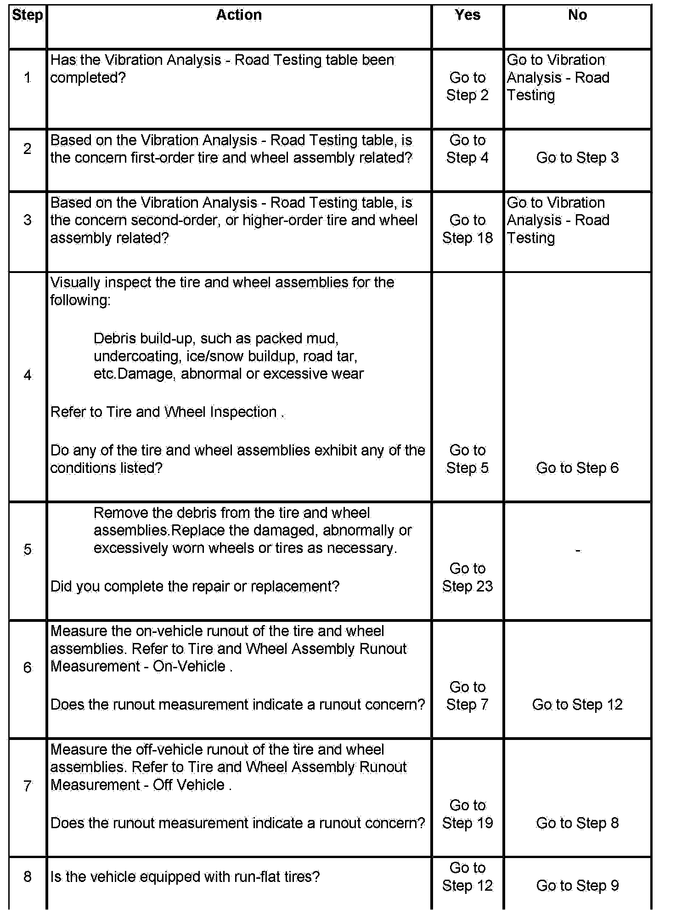
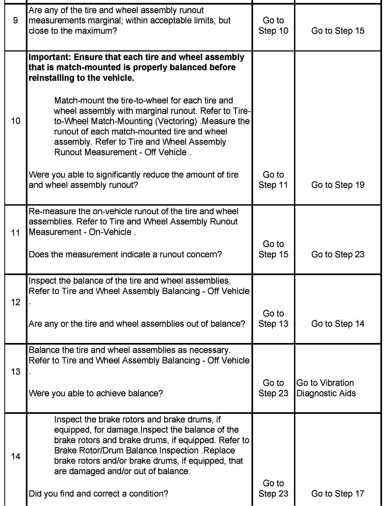
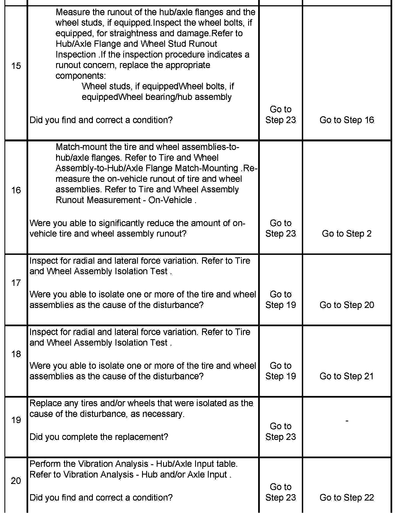
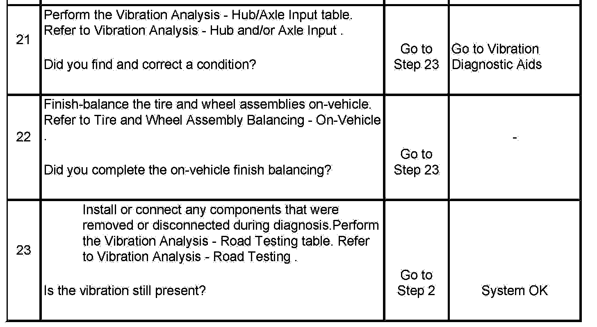

Vibration Analysis - Tire and Wheel
Vibration Analysis - Tire and Wheel
Test Description
The numbers below refer to the step numbers in the diagnostic table:
4. A build-up of foreign material on a tire and wheel assembly and/or a damaged, abnormally or excessively worn tire and wheel assembly could cause a vibration disturbance.
6. Tire and wheel assemblies that exhibit excessive runout when measured while mounted on the vehicle, may or may not be contributing to, or causing a vibration disturbance. On-vehicle runout, if present, could contribute to, or cause a vibration disturbance, but the cause of the on-vehicle runout may not be the tire and wheel assemblies.
7. Tire and wheel assemblies that exhibit excessive runout when measured off of the vehicle could cause a vibration disturbance.
9. Tire and wheel assemblies that exhibit marginal runout-within acceptable limits, but close to the maximum-when measured off of the vehicle could still be contributing to a vibration disturbance, if its mating hub/axle flange also exhibits marginal runout. When the tire and wheel assembly and the hub axle flange are mounted to each other, the combined stack-up of their marginal amounts of runout could combine to produce an excessive amount of runout, which could cause a vibration disturbance.
14. Brake rotors and/or brake drums, if equipped, that exhibit excessive imbalance could contribute to, or possibly cause a vibration disturbance.
15. A hub/axle flange and/or wheel studs that exhibit excessive runout could cause a vibration disturbance.
16. When the tire and wheel assembly and the hub axle flange are mounted to each other, the combined stack-up of their marginal amounts of runout could combine to produce an excessive amount of runout, which could cause a vibration disturbance. Match-mounting or vectoring the tire and wheel assembly to the hub/axle flange will modify the amount of combined runout.
18. Force variation may be present in a tire and wheel assembly that exhibited acceptable balance and runout. Force variation, if present, could contribute to, or cause a vibration disturbance.
20. Vibration disturbances could be affected by, or possibly caused by, components that are susceptible to steering input and/or torque-load input.
22. On-vehicle balancing, or finish-balancing can be used to reduce small amounts of imbalance which may be present as a result of the combined stack-up of the tire and wheel assembly with other components which may exhibit marginal balance.



